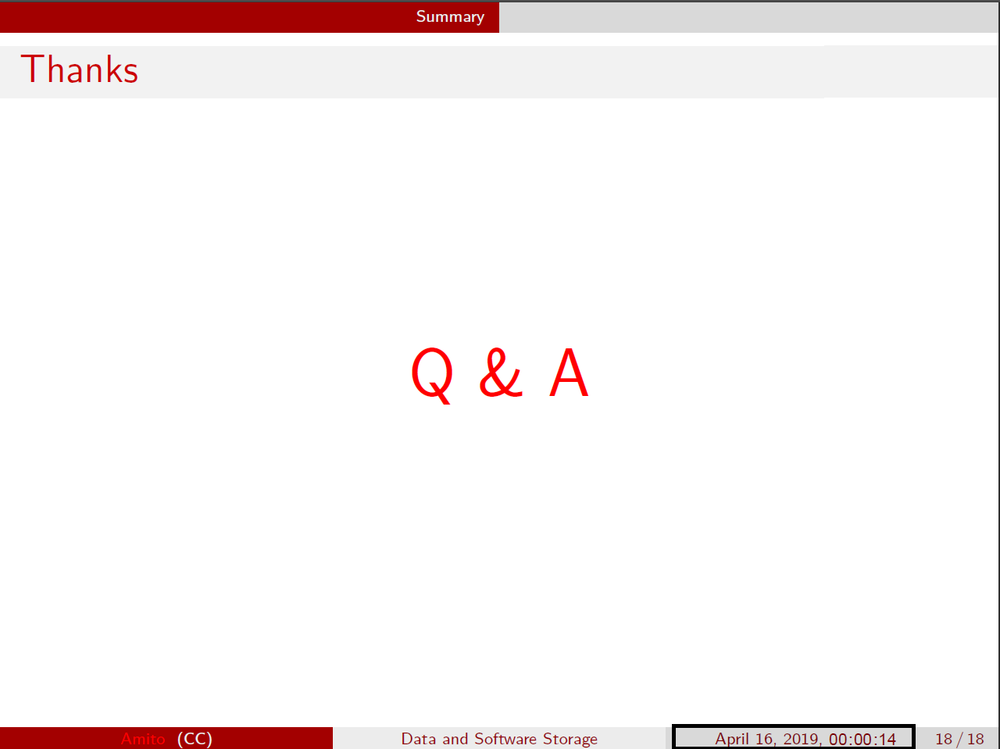

在 Beamer 中添加计时器和 Logo
在 PPT 中有一个演讲计时功能，能够帮助报告人掌握演讲时间。 其实 pdf 中也有这一功能，在 beamer 中添加计时器比较方便。 此外，在 beamer 标题中加上特定的 Logo 也是比较简单的。
目录
添加 timer 计时器
LaTeX 中 tdclock 包可以提供定时功能。添加一个计时器也很简单。
-
在导言区加入 tdclock 包。可以设置一次提醒，二次提醒时间，更新时间间隔等等。
\usepackage[timeinterval=2.0, timeduration=2.0, timedeath=0, fillcolorwarningsecond=white!60!yellow,timewarningfirst=900,timewarningsecond=1080]{tdclock} -
\initclock 初始化。在适当的位置，如 titlepage 中加入这一命令。
\begin{frame} \titlepage \initclock \end{frame} -
在要显示的地方加入 \crono 命令，比如在 footer 中。如果使用的三段式 footer 结构，可以在 footer 中显示时间，则可以这样做：
\begin{frame} \titlepage \initclock \end{frame} \date{\today \crono}
这样会显示日期和从 00:00:00 开始的计时器，如下图黑框所示。

- tdclock 与 xelatex 一起使用会有些小问题，会显示不完全， 这里 提供了一种解决方法。测试是可以的。
在 frame 中加入 logo
在标题中加入 logo
通过简单地修改 frametitle 就能加入 logo， 而不用 textopt 等包。
-
在 \begin{document} 之前重新定义 frametitle，这会在 frametitle 最右端显示一个 logo:
\setbeamertemplate{frametitle} {\begin{beamercolorbox}[wd=\paperwidth]{frametitle} \strut\hspace{0.5em}\insertframetitle\strut \hfill \raisebox{-2mm}{\includegraphics[width=1cm]{$logo$}} \end{beamercolorbox} } -
只为 titlepage 页面，定义新的 logo，而不是在 title 中添加 logo。
{\setbeamertemplate{logo}{} \titlegraphic{\includegraphics[height=1.8cm]{images/logo.jpg}\hspace{1em}\includegraphics[height=1.8cm]{images/lhaaso.png}} \begin{frame} \titlepage \initclock \end{frame} } -
最终结果如下图所示
在页面右下角加入 logo。
有时我们会想在其它地方加上 logo， 比如 页面右下角， 这时一般直接使用 \logo 命令即可。
\logo{\includegraphics[height=1cm]{my_logo.png}
如果想要调整位置，可以使用 pgf 命令， 但坐标位置需要仔细调整。
\logo{\pgfputat{\pgfxy(-9,9)}{\pgfbox[center,base]{\includegraphics[width=1.5cm]{$logo$}}}}